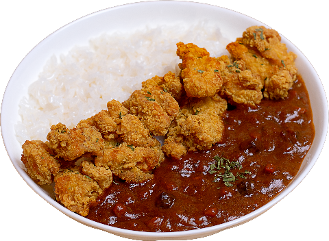
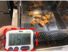
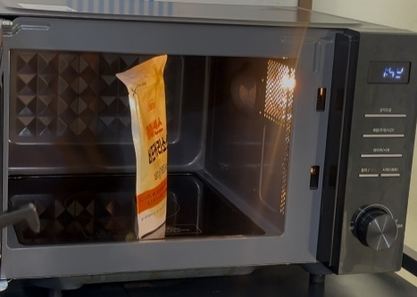
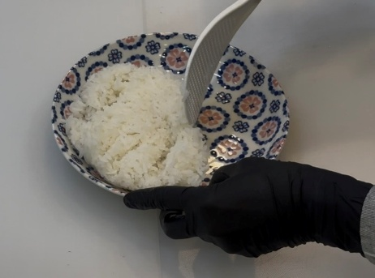
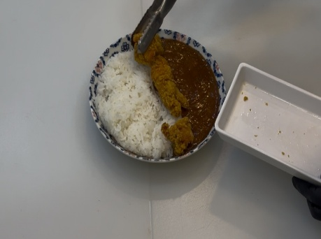
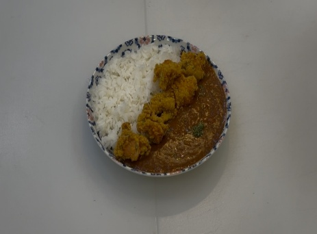

← 목록으로

메뉴명
바삭 치킨카레덮밥
판매가격
8,900원
원재료
아이센스 순살치킨, 아이센스 비프커리, 밥, 파슬리
사용 부자재
덮밥접시
메뉴특징
진한 비프커리와 바삭한 순살치킨을 한 접시에 담은 든든한 치킨카레
※ 제조 후 최대한 빨리 제공할 것.
조리방법

1
180도 튀김기에 순살치킨 100g을 넣어 5분간 튀긴 후 기름을 충분히 빼준다. (*덜 익으면 1분 더 튀겨준다.)

2
700W 전자레인지에 아이센스 비프커리를 살짝 뜯어 2분간 돌려준다.

3
덮밥접시 왼쪽에 밥 200g을 담아준다.

4
덮밥접시 오른쪽에 데운 비프커리를 부어 담아준다.

5
튀긴 순살치킨을 반으로 잘라 밥과 카레 사이에 올려준다.
6
치킨과 카레에 파슬리를 뿌려 완성한다.